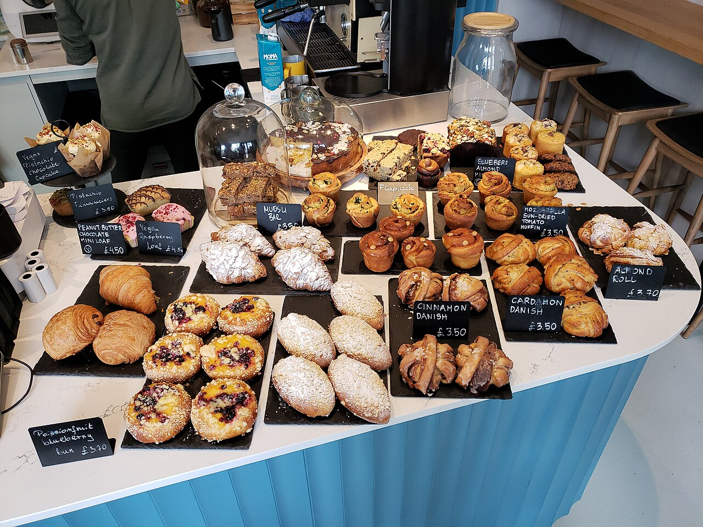
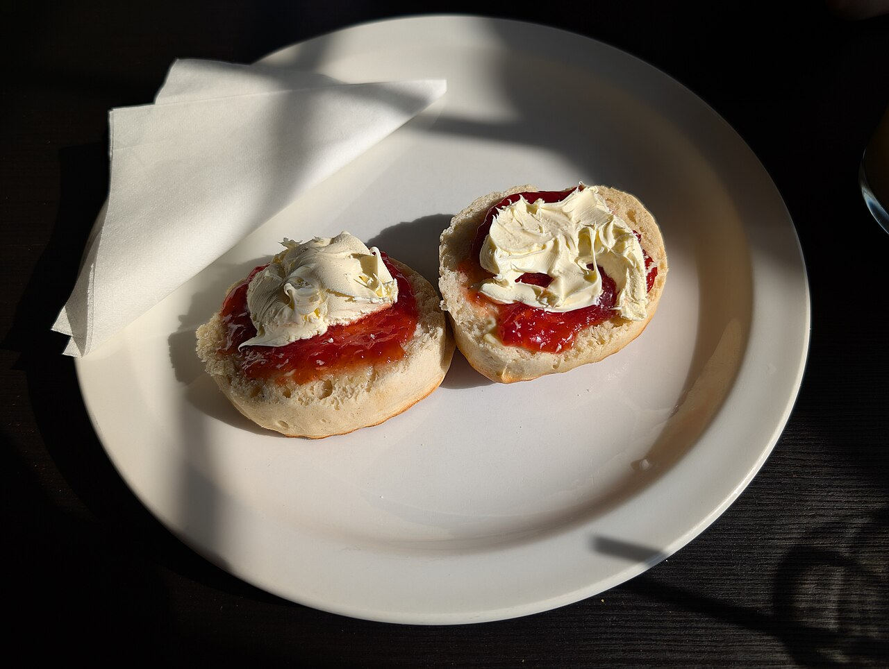

Artisan Bakery - Bury, Greater Manchester
Homemade cakes, baked the proper way.
Celebration cakes, market-day favourites and wholesale bakes - all made by hand, with free home delivery across Bury and options for every dietary need.

Photos are placeholders - the bakery's own bakes will replace them.
Baking since
2016
Home delivery
Free across Bury
Dietary needs
All catered for
Food hygiene
5 / 5 rating
Fresh from the oven
A taste of what comes out of our kitchen - from a proper Victoria sponge to cupcakes by the box.




Find us
At Rawtenstall Market Hall
Come and say hello at our stall - everything on the counter is baked by us, and the counter changes with the seasons.
- Rawtenstall Market Hall, Newchurch Road, Rawtenstall, BB4 7QX
- Homemade cakes and bakes, made fresh
- Wholesale orders for local cafes and shops
- Free home delivery across Bury